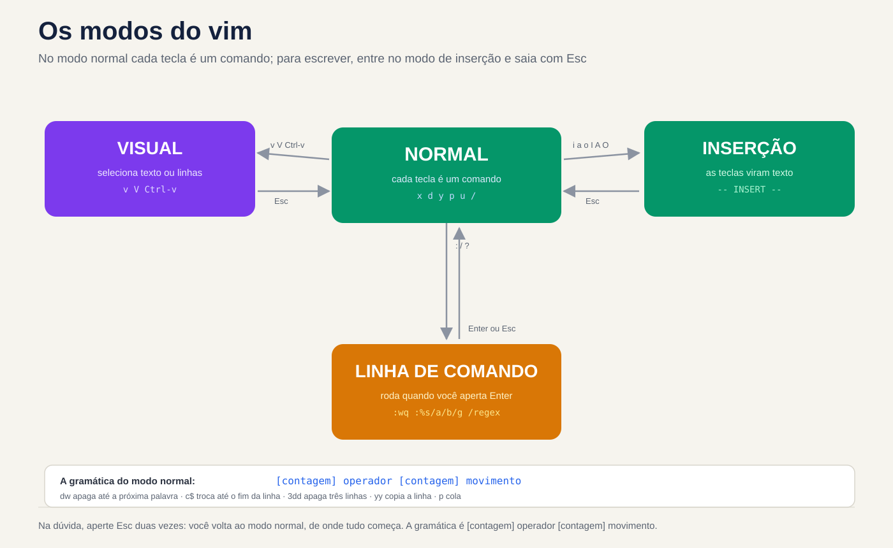
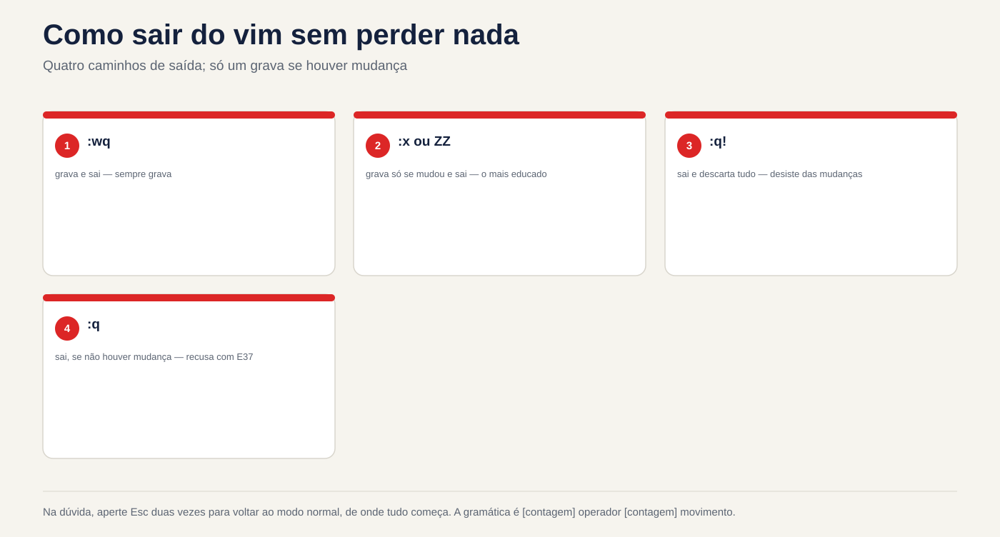

Lezione 3.5 · Ho visto e sono venuto davvero
Nelle lezioni 3.3 e 3.4 hai modificato i file con i comandi: grep ha scelto le righe, sed ha scambiato, awk ha calcolato. Oggi si modificano i file a mano, nell'editor che esiste in tutti i Linux, anche sul server appena installato, nel contenitore senza pacchetti e in modalità di emergenza, quando il disco non è montato e non c'è rete. Questo editor è vi, ed è quasi sempre vim, in alcune versioni. Non deve piacerti. Devi entrare, cambiare ciò che devi cambiare, uscire senza rovinare nulla e sapere cosa fare quando la sessione finisce a metà. Il resto è velocità, e la velocità deriva dalla stessa espressione regolare delle ultime due lezioni.
| File | lezione 3.5 |
|---|---|
| Modulo | M3 · Testo ed editor, lezione 5 di 5 |
| Quando | Settimana 8 |
| Alla fine puoi | Apri, salva ed esci da vi senza perdere nulla, con :w, :q!, :wq, :x e ZZ; passare dalla modalità normale, di inserimento, da riga di comando a quella visiva senza perdersi; camminare per parola, riga e numero di riga senza frecce; cancella, copia, incolla, annulla e ripeti con operatore, sposta, conta e .; cercare con / e ? e scambiare con :s e :%s, con gruppi, & e un altro delimitatore; eliminare e filtrare le righe con :g, :v e :%!; vedi tabulazioni, spazi e Finestre ^M con :set list e :set ff; recuperare un'edizione perduta tramite file .swp; modificare i file di sistema con sudoedit e visudo, senza sudo vim; sapere quale vi viene installato da ciascuna distribuzione e perché a volte Debian "non annulla" |
| Articoli di prova | LPIC-1 103.8 (modifica di base di file con vi e la variabile EDITOR) · RHCSA (crea e modifica file di testo; nel test vi è l'editor sempre presente) |
| Prerequisiti | lezione 2.3 (giornale e registri); lezione 3.3 (BRE ed ERE, lezioni come [[:space:]]); lezione 3.4 (s///, gruppi, &, ~/lab34 con conf.amostra e acesso.log) |
| Tempo | Intorno alle 2:30 |
| Istantanee | m3a5-start e m3a5-end su entrambe le VM |
1 · Riscaldamento
Tre domande, fuori dalla mia testa. Scrivi le risposte; la chiave di risposta viene visualizzata alla fine.
- Apri un file in
vie digita subitoPort 2222. Sullo schermo appaiono cose che non hai digitato e il cursore salta da qualche altra parte. Indovina: cosa è successo? - Si apre un file e
vimmostraE325: ATTENTIONe parla di un file.swp. Indovina: cosa significa ed è pericoloso premere semplicemente Invio? - Il cursore è sulla riga 1 di
conf.amostrae si digita:s/yes/no/. Indovina: la riga 7,PasswordAuthentication yes, cambia?
2 · Perché è importante
vi raramente rovina un file da solo. Ciò che lo rovina è la fretta di uscirne:
| Il cosiddetto | La risposta sbagliata | Cosa provoca |
|---|---|---|
"Il server si è bloccato in modalità emergenza a causa di /etc/fstab" | Cerca nano | Nella modalità emergenza di Rocky, e in molte immagini minimali, c'è solo vi. Coloro che non sanno come usarlo reinstallano il server, o aspettano qualcuno che lo faccia |
"Inserisci l'utente operador in sudoers" | sudo vi /etc/sudoers e salva | Un errore di battitura passa dritto perché vi non controlla nulla. sudo la prossima volta si lamenta e talvolta smette di lavorare per tutti. visudo controlli prima della registrazione |
"Non posso uscire da vi, chiudo il terminale" | Chiudi la finestra o interrompi il processo | La modifica va perduta e resta un .arquivo.swp. La prossima persona che aprirà il file, forse tu domani, riceve un E325 e non sa cosa rispondere |
"Scambia tutti i yes con no nel file" | :s/yes/no/ | Cambia solo sulla riga del cursore e solo alla prima occorrenza. % e g fanno la differenza, come in sed |
| "Modifica il file root, senza togliergli il permesso" | sudo vim /etc/algo.conf oppure chmod 666 per poter salvare | sudo vim esegue l'intero editor come root, con i suoi plugin e :! apre una shell di root. chmod lascia il file aperto a qualsiasi utente. sudoedit modifica una copia come utente e la riscrive come root |
| "Lo script è arrivato da un collega che usa Windows e non lo esegue" | Riscrivi la sceneggiatura | Il file ha \r\n alla fine di ogni riga. vim mostra [dos] quando viene aperto e un :set ff=unix lo risolve in due secondi |
vi è strano per un motivo: le lettere sono comandi, a meno che non dici che stai per scrivere del testo. Una volta capito questo, il resto è vocabolario.
3 · Modello mentale
viha modalità. Nella modalità normal, ovvero quella in cui si accede, ogni tasto è un comando:xcancella,dinizia una "cancella",wsposta una parola. Per scrivere il testo, si entra nella modalità inserimento (coni,aoo) e si esce conEsc. I comandi con:,/e?aprono una riga di comando nel piè di pagina, che viene eseguita quando si preme Invio. In caso di dubbio, premere due volteEsc: si ritorna alla modalità normale, da dove tutto ha inizio.
i a o I A O
┌──────────────────────►┌───────────────┐
│ │ INSERÇÃO │ as teclas viram texto
vim arquivo ─►┌───┴─────────┐◄────────────┤ -- INSERT -- │
│ NORMAL │ Esc └───────────────┘
│ teclas são │
│ comandos │ : / ? ┌───────────────┐
│ ├────────────►│ LINHA DE │ :wq :%s/a/b/g /regex
│ │◄────────────┤ COMANDO │ roda com Enter
└───┬─────────┘ Enter ou Esc└───────────────┘
│ ▲
v V ^v │ │ Esc, ou um operador (d y c > <)
▼ │
┌──────┴────────┐
│ VISUAL │ seleciona caracteres (v), linhas (V) ou um bloco (Ctrl-v)
└───────────────┘
A gramática do modo normal: [contagem] operador [contagem] movimento
d w apaga até a próxima palavra
c $ troca até o fim da linha
3 d d apaga 3 linhas (operador repetido = a linha inteira)
y G copia daqui até a última linha
. repete a última mudança, onde o cursor estiverDue conseguenze pratiche. Primo: un comando in modalità normale è una frase, verbo e oggetto. Non si memorizzano dw, dd, d$, cw, c$, yy, y$ come quattordici scorciatoie; memorizzare tre verbi (d, c, y) e alcuni movimenti, e combinarli. Secondo: . ripete l'intera frase. Una modifica che funziona una volta diventa n e ., n e ., quante volte vuoi, controllandole tutte.


4 · Concetto a strati
Essenziale
Apri ed esci. Tutto inizia e finisce in modalità normale. Se non sai dove si trova, Esc.
| Digiti | Fare |
|---|---|
vim arq | Apri il file. Se non esiste, aprilo vuoto e crealo durante il salvataggio |
vim +7 arq | Apre sulla linea 7 |
vim +/Password arq | Si apre sulla prima riga che corrisponde alla regex |
view arq o vim -R arq | Si apre solo per la lettura. È il modo di guardare un file di produzione senza paura |
:w | Scrive e continua nel file |
:q | Esci se non ci sono modifiche da salvare. Se esiste, rifiutare con E37 |
:q! | Esci e annulla le modifiche |
:wq | Registra ed esci. Registra anche senza modifiche e la data del file cambia |
:x o ZZ | Registra solo se è presente una modifica ed esce |
ZQ | Come :q! |
:w novo.conf | Salva una copia con un altro nome; il buffer rimane legato al |
originale :e! | Restituisce il file così com'è sul disco, eliminando ciò che è stato modificato dall'ultimo :w |
Accedi alla modalità di inserimento. La lettera sceglie dove va il testo:
| Chiave | Dove |
|---|---|
i | Prima del cursore |
a | Dopo il cursore |
I | All'inizio della riga, dopo gli spazi |
A | Alla fine della riga |
o | Su una nuova riga, sotto |
O | Su una nuova riga, sopra |
Floor. Senza frecce, che potrebbe non funzionare in un terminale non valido, e con conteggio, che le frecce non hanno:
| Chiave | Vai a |
|---|---|
h j k l | Sinistra, giù, su, destra |
w b e | Inizio della parola successiva, inizio di questa o della precedente, fine della parola |
0 ^ $ | Inizio riga, primo carattere diverso dallo spazio, fine riga |
gg G | Prima riga, ultima riga |
7G o :7 | Linea 7 |
Ctrl-f Ctrl-b | Una schermata avanti, una schermata indietro |
% | La parentesi, parentesi graffa o graffa che chiude (o apre) ciò che si trova sotto il cursore |
Elimina, copia, incolla, annulla.
| Chiave | Fare |
|---|---|
x | Cancella il carattere sotto il cursore |
r seguito da | Cambia il carattere sotto il cursore in questo tasto e continua in modalità normale |
dd | Cancella la linea. 3dd cancella tre |
dw, d$ o D | Cancella fino alla parola successiva, fino alla fine della riga |
cw, c$ o C | Elimina ed entra nella modalità di inserimento: "scambia" |
yy | Copia la riga (y deriva da yank). 5yy copia cinque |
p P | Incolla dopo, prima. Una riga copiata viene incollata sotto o sopra |
u | Annulla |
Ctrl-r | Ripeti |
. | Ripetere l'ultima modifica |
J | Aggiungi la linea di basso a questa |
Il dd non solo cancella: salva la linea. Ecco perché ddp scambia la riga corrente con quella sottostante, e dd, pavimento, p è il "copia e incolla" di vi.
Cerca.
| Chiave | Fare |
|---|---|
/regex | Ricerca in avanti a partire dal cursore |
?regex | Ricerca all'indietro |
n N | Evento successivo, nella stessa direzione o nella direzione opposta |
* # | Cerca la parola sotto il cursore, avanti o indietro |
La ricerca utilizza regex, lo stesso delle lezioni precedenti, con il sapore di vim, che vedi in Intermedio.
Intermedio
Operatore e movimento. Qualsiasi operatore corrisponde a qualsiasi movimento:
| Frase | Fare |
|---|---|
dw | Cancella fino all'inizio della parola successiva |
d$ | Cancella fino alla fine della riga |
dG | Cancella da qui fino alla fine del file |
dgg | Cancella da qui all'inizio |
d/Port | Cancella da qui alla riga successiva con Port, senza |
c0 | Passare dall'inizio della riga al cursore |
yG | Copia da qui alla fine |
>> e << | Aumenta e diminuisce il rientro della riga; >G fino alla fine |
gUw e guw | Scrivi la parola in maiuscolo, minuscola |
Una "parola" per w è una sequenza di lettere, numeri e _, o una sequenza di altri simboli. Ecco perché dw invece di #PermitRootLogin cancella solo #: # è una parola e PermitRootLogin un'altra. Il W maiuscolo utilizza solo gli spazi come separatore, mentre dW cancellerebbe l'intero #PermitRootLogin.
Scambia con :s. È il s/// di sed, all'interno dell'editor. Senza intervallo, agisce sulla riga del cursore:
| Comando | Agisci a |
|---|---|
:s/yes/no/ | Prima occorrenza sulla riga del cursore |
:s/yes/no/g | Tutto sulla riga del cursore |
:%s/yes/no/g | Tutto, nell'intero fascicolo. % è "dalla prima all'ultima riga" |
:5,10s/^/#/ | Dalla riga 5 alla 10: commento su sei |
:.,$s/a/b/ | Dalla riga del cursore (.) fino alla fine ($) |
:'<,'>s/a/b/ | Sulle linee selezionate in modalità visiva. vim scrive '<,'> da solo quando si preme : con una selezione |
:%s/a/b/gc | Tutti, chiedendo uno per uno: y scambia, n salta, a scambia tutti quelli mancanti, q per |
:%s/a/b/ge | Tutti, senza commettere errori se non ne trovi nessuno. Utile nelle macro e negli script |
Gruppi, & e altri delimitatori funzionano come in sed: :%s/^\(PasswordAuthentication\) yes$/\1 no/, :%s/^MaxAuthTries/# &/, :%s#/login#/entrar#g.
L'espressione regolare di vim. Per impostazione predefinita, vim funziona come il BRE di sed e grep senza -E: +, ?, |, parentesi graffe e parentesi sono letterali, tranne che con una barra. E ha le sue scorciatoie:
Nel vim | Voglio dire | Nell'ERE del grep -E |
|---|---|---|
\+ \? \= | Uno o più, zero o uno, zero o uno | + ? ? |
\{2,4} | Da due a quattro volte | {2,4} |
\( \) \| | Gruppo e alternativa | ( ) | |
\s \S | Spazio o tabulazione e viceversa | [[:space:]], [^[:space:]] |
\d \w | Cifra, carattere di parola | [0-9], [[:alnum:]_] |
\< \> | Inizio e fine della parola | \b |
\v all'inizio | Molto magico: da ora in poi + ? | ( ) { } senza barra, come in ERE | |
\c ovunque | Ignora le lettere maiuscole in questa ricerca | grep -i |
Quindi, :%s/[0-9]+/N/g cerca "una cifra seguita da un +", e non trova nulla in acesso.log. Quello che volevi è :%s/[0-9]\+/N/g o :%s/\v[0-9]+/N/g.
Elimina e filtra le righe con :g e :v. :g/regex/comando esegue il comando su ogni riga che corrisponde; :v, che non corrisponde. I due più utilizzati:
:g/^\s*#/d apaga os comentários, com ou sem recuo (o sed '/^[[:space:]]*#/d')
:g/^\s*$/d apaga as linhas vazias ou só com espaços
:v/401/d deixa só as linhas com 401 (o grep 401, dentro do editor)
:g/Failed/p só mostra, sem mudar nada (o p é de print)vim parla con la shell.
| Comando | Fare |
|---|---|
:!comando | Esegui un comando e torna indietro. :!ls -l % elenca il file aperto; % è il suo nome |
:r arquivo | Inserisce il contenuto di un altro file sotto il cursore |
:r !comando | Inserisce l'output di un comando: :r !ip -br a |
:%!comando | Passare l'intero file attraverso il comando e scambiare il risultato: :%!sort -u |
:5,10!sort | Lo stesso, solo sulle righe da 5 a 10 |
:w !comando | Invia il buffer al comando senza salvare il file: :w !wc -l |
:%! rende l'editor un banco di filtri: tutto quello che hai imparato nelle lezioni da 3.2 a 3.4 gira all'interno di vim, con u da annullare se va storto.
Configure. :set sono validi fino all'uscita; al ~/.vimrc si applicano sempre:
| Opzione | Fare |
|---|---|
:set nu e :set nonu | Mostra e nasconde i numeri di riga |
:set list | Mostra la scheda come ^I e la fine della riga come $, come cat -A |
:set hlsearch e :noh | Evidenzia le ricerche; :noh cancella l'evidenziazione fino al successivo |
:set ignorecase smartcase | Cerca senza distinzione tra maiuscole e minuscole, a meno che non si digiti |
:set ff? | Mostra il formato delle righe: unix (\n) oppure dos (\r\n) |
:set paste | Incolla il testo senza che vim rientri ogni riga da sola. :set nopaste poi |
:set opção? | Mostra il valore di qualsiasi opzione |
Bridge Windows
| Su Windows | Nel vim | Attenzione |
|---|---|---|
| CTRL+S | :w | Nel terminale, Ctrl+S può congelare lo schermo (è il vecchio controllo di flusso). Se congelato, Ctrl+Q sblocca |
| Ctrl+Z (annulla) | u | Nel terminale, Ctrl+Z sospende vim e restituisce la shell. Non ha chiuso: gli ritorna fg. Se lo dimentichi ed esci da SSH, ti rimane un .swp |
| Ctrl+F (trova) | /texto | La ricerca di vim è regex: . corrisponde a qualsiasi carattere, come nella lezione 3.3 |
| Ctrl+H (sostituisci) in Blocco note++ | :%s/de/para/gc | In Notepad++, la modalità "Espressione regolare" utilizza \1 come vim |
| Notepad++ "Modifica > Conversione di fine riga > Unix (LF)" | :set ff=unix e :w | Il vecchio Blocco note sempre salvato in \r\n. Il Blocco note corrente mantiene il formato del file, ma in \r\n |
| viene visualizzato un nuovo file. Apri Blocco note "come amministratore" | sudoedit arq | Su Windows, l'intero editor diventa amministratore. Su Linux, sudoedit lascia l'editor al tuo utente e viene eseguita solo la registrazione come root |
notepad arq in PowerShell | $EDITOR arq | Su Linux, ogni programma che apre un editor (crontab -e, visudo, git commit, systemctl edit) esamina le variabili VISUAL e EDITOR |
Advanced
Il file di scambio (.swp). Mentre si modifica conf.amostra, vim scrive le modifiche, ogni pochi secondi, in un file nascosto a lato, .conf.amostra.swp. Se la sessione va in crash (chiusura SSH, kill -9, chiusura del server), i cambiamenti ci sono. La prossima volta che qualcuno apre il file, vim mostra E325: ATTENTION e offre:
| Opzione | Fare | Quando |
|---|---|---|
(O)pen Read-Only | Si apre in sola lettura | Guardare prima di decidere |
(E)dit anyway | Aprire il file su disco e ignorare .swp | Quasi mai. Se qualcun altro sta modificando, uno sovrascrive l'altro |
(R)ecover | Recupera le modifiche da .swp | La sessione si è bloccata e desideri ciò che avevi fatto |
(D)elete it | Cancellare .swp | Ti sei già ripreso, o sai che non vuoi quello che c'è dentro. Viene visualizzato solo se il processo proprietario non è più in esecuzione |
(Q)uit e (A)bort | Arrendersi | Per andare a chiedere chi sta modificando |
Se il messaggio dice process ID: 12345 (STILL RUNNING), un'altra sessione ha il file aperto adesso: è un collega, oppure sei tu in un altro terminale. Non modificarlo. Dopo il ripristino, il vecchio .swp è ancora lì, e E325 ritorna nell'apertura successiva finché non lo elimini. vim -r, senza file, elenca i .swp trovati.
Modifica file di sistema: sudoedit, visudo e azienda.
| Archivio | Utilizzare | Perché |
|---|---|---|
| Qualsiasi file di configurazione | sudoedit arq (come sudo -e arq) | Copia il file nel tuo file temporaneo, apri il tuo editor con tuo ~/.vimrc e alla fine salvalo di nuovo come root. Né il plugin né :! vengono eseguiti come root |
/etc/sudoers e /etc/sudoers.d/* | sudo visudo e sudo visudo -f /etc/sudoers.d/arq | Blocca il file, modifica una copia e registra solo se la sintassi è corretta. In caso contrario chiedere al What now?: e torna in editing, x esce senza registrare, Q registra con l'errore (mai) |
/etc/passwd e /etc/group | sudo vipw e sudo vigr | Bloccano il file in modo che non vada perso anche un useradd. vipw -s e vigr -s modificano shadow e gshadow |
| La tabella cron | crontab -e | Controllare la sintassi all'uscita e ricaricare |
| Un servizio systemd | sudo systemctl edit nome | Crea il file override nel posto giusto e ricarica systemd (è lezione 4.x) |
| Controlla senza modificare | sudo visudo -c | Leggi sudoers e tutti quelli compresi e di' se sono corretti. Non apre l'editor |
Se sei già in vim, hai modificato un file root e non puoi salvare, c'è l'uscita di emergenza: :w !sudo tee % > /dev/null. :w ! invia il buffer a sudo tee che scrive il file come root; > /dev/null nasconde la copia che tee mostrerebbe. vim poi ti avverte che il file è stato spostato al di fuori di esso: premi L per ricaricare. Funziona, ma è una patch. L'abitudine è di aprire dall'inizio con sudoedit.
VISUAL, EDITOR e l'editor standard. I programmi cercano in questo ordine: SUDO_EDITOR (solo sudoedit), VISUAL, EDITOR e infine uno standard di distribuzione. A Rocky, l'impostazione predefinita è vi. In Debian è /usr/bin/editor, che il sistema delle alternative punta a nano. Per impostarlo, in ~/.bashrc: export VISUAL=vim EDITOR=vim.
Modalità visiva e blocco. v seleziona i caratteri, V le linee, Ctrl-v un rettangolo. Con una selezione un operatore agisce su di essa: d, y, >, : (per un :s proprio lì). Nei vim, Ctrl-v completi, scendi alcune righe, i commenti I# e Esc tutti insieme. Nelle versioni minime il blocco non può avere I; :5,10s/^/#/ funziona in entrambi.
Registri. Ogni d, c e y va in un registro. " è l'impostazione predefinita; "0 conserva l'ultima copia (y), che poi dd non cancella; I "a fino ai "z sono tuoi. "ayy copia la riga per registrare a, "ap incolla. :reg li mostra tutti. Questo risolve il classico problema: hai copiato una riga, ne hai cancellata un'altra per fare spazio e p hai incollato quella cancellata. Incollare con "0p.
Modelines. Un file può avere, nella prima o nell'ultima riga, un commento come # vim: set ts=4 sw=4:, e vim applica le opzioni all'apertura. Ci sono già state violazioni della sicurezza lungo questo percorso. Ecco perché diverse distribuzioni disattivano la funzione per root, e chi modifica i file di altri può mettere set nomodeline in ~/.vimrc.
Cosa rientra nel test
- LPIC-1 103.8. L'obiettivo richiede: navigare con
vi, comprendere e utilizzare le modalità, inserire, modificare, eliminare, copiare e cercare testo, conoscere Emacs,nanoevime configurare l'editor predefinito (EDITOR). L'elenco dei termini comprendevi,/,?,h,j,k,l,i,o,a,d,p,y,dd,yy,ZZ,:w!,:q!eEDITOR. Domande tipiche: "quale comando salva ed esce?" (ZZe:wq, e talvolta:x), "quale esce senza salvare?" (:q!), "che copia una riga?" (yy), "che apre una riga sottostante ed entra nell'inserimento?" (o). Controlla l'elenco aggiornato sul sito web LPI. - RHCSA. Il test è pratico e molti file possono essere modificati solo con
vi(onano, se installato). I punti che costano di più: uscire accidentalmente senza salvare, lasciare un.swpche interrompe la modifica successiva e salvare un file con un errore di sintassi che manda in crash un servizio.visudoesudoeditvalgono più della velocità.
5 · Rocky × Debian
| Articolo | laboratorio-roccioso (Rocky 9) | debian-lab (Debian 13) | Come controllare |
|---|---|---|---|
Cos'è vi | /usr/bin/vi, dal pacchetto vim-minimal | /usr/bin/vi → /etc/alternatives/vi → /usr/bin/vim.tiny, dal pacchetto vim-tiny | readlink -f "$(command -v vi)" |
Il vim completo | Pacchetto vim-enhanced, che non sempre è installato | Pacchetto vim, che non è installato | command -v vim |
| Versione | 8.2 | 9.1 | vi --version | head -2 |
| Dopo aver installato la versione completa | vi resta vim-minimal; il pacchetto solitamente contiene un /etc/profile.d/vim.sh con alias vi=vim per gli utenti comuni, ma non per root | vi ora punta a vim.basic perché ha la priorità più alta tra le alternative | type vi; update-alternatives --display vi |
Modalità compatibile con il vecchio vi | No, nell'uso normale | vim.tiny si legge /etc/vim/vimrc.tiny, che collega compatible, a meno che tu non abbia un ~/.vimrc | :set compatible? all'interno dell'editor |
Editor predefinito (EDITOR vuoto) | vi | /usr/bin/editor, che rimanda a nano | update-alternatives --display editor (Debian) |
visudo e sudoedit senza EDITOR | Aprire vi | Aprire nano | Corri a vedere |
crontab -e la prima volta | Aprire vi | Chiede quale editor si desidera (select-editor) e salva la scelta in ~/.selected_editor | Esegui come nuovo utente |
vimtutor | Viene fornito con vim-enhanced | Viene fornito con il pacchetto vim | command -v vimtutor |
syntax on in ~/.vimrc | Errore in vim-minimal | Errore in vim.tiny | Proteggi con if has('syntax') |
La linea che attacca di più è la modalità compatibile. Lo stesso vi, nella stessa schermata, annulla una sola volta, e le frecce in modalità inserimento scrivono lettere. Non è un difetto: è vim che imita di proposito il vi degli anni '80. Nell'Interruzione B puoi vedere questo problema e risolverlo con una riga.
L'altra proviene dall'editor standard. In Debian, sudo visudo apre nano e chiunque abbia addestrato solo vi si perde dall'altra parte. Sapere come uscire da entrambi: in nano, Ctrl+O salva e Ctrl+X esce.
6 · Laboratorio guidato
Sei rodrigo, in rocky-lab, e raggiungi debian-lab tramite ssh deb. Tutto avviene in ~/lab35, su entrambe le VM, su copie. La regola del laboratorio: prima di ogni passaggio, cp conf.orig treino.conf; quindi diff conf.orig treino.conf ti mostra esattamente cosa hanno fatto le tue chiavi. diff è il tuo giudice, non la tua memoria. L'unico file root è quello del passaggio 8, creato appositamente per il laboratorio, in /srv/lab35. Nessun file di sistema è aperto in scrittura.


Nei blocchi sottostanti, i tasti premuti all'interno di vim compaiono in un commento dopo il comando che apre l'editor. Esc è il tasto Esc, Enter è il tasto Invio, e lo spazio tra i tasti è solo di lettura: non premere la barra spaziatrice.
Passo 0 · Istantanea, cartella e quale vi hai
In Proxmox, scatta l'istantanea m3a5-inicio delle due VM. Presso Rocky-Lab:
eval "$(ssh-agent -s)"; ssh-add
mkdir -p ~/lab35; ssh deb 'mkdir -p ~/lab35'
cd ~/lab35
cp ~/lab34/conf.amostra conf.orig
cp ~/lab34/acesso.log .
wc -l conf.orig acesso.log
scp conf.orig acesso.log deb:lab35/ 11 conf.orig
15 acesso.log
26 totalSe ne mancano, ricreateli con il Passo 0 della Lezione 3.3. Ora scopri quale vi ha ciascuna VM. Esegui il blocco in rocky-lab e, cambiando rpm -qf in dpkg -S, in debian-lab:
type vi vim
readlink -f "$(command -v vi)"
rpm -qf "$(readlink -f "$(command -v vi)")"
vi --version | head -2
echo "VISUAL=$VISUAL EDITOR=$EDITOR"In Rocky dovresti vedere qualcosa come vi is /usr/bin/vi, il pacchetto vim-minimal, VIM - Vi IMproved 8.2 e, nella seconda riga, una versione Small o Huge, a seconda della build. Forse vim non esiste nemmeno. In Debian, readlink termina con /usr/bin/vim.tiny, dpkg -S dice vim-tiny, la versione è 9.1 e la seconda riga dice Tiny version. Entrambe le variabili sono vuote. Su Debian, controlla anche l'editor predefinito:
ssh deb 'update-alternatives --display editor | head -3; update-alternatives --display vi | head -3'Ora installa il vim completo su entrambi, e controlla di nuovo:
sudo dnf install -y vim-enhanced
ssh -t deb 'sudo apt install -y vim'
bash -lc 'type vi vim'
ssh deb 'readlink -f "$(command -v vi)"; readlink -f /usr/bin/editor'Su Rocky, vi rimane vim-minimal; in una nuova shell di login, type vi potrebbe mostrare vi is aliased to 'vim', che deriva da /etc/profile.d/vim.sh. In Debian, vi ora termina con /usr/bin/vim.basic e editor continua con nano. vim.tiny non è scomparso: rimane installato e Quebra B lo utilizza. Annota cosa è uscito in ogni VM.
Passo 1 · Entra ed esci senza fare confusione
cd ~/lab35
cp conf.orig treino.conf
vim treino.conf # in vim: dd e poi :q InvioHai cancellato la prima riga e hai chiesto di uscire.
Decidi 1 · Cosa fa vim con :q?
- A) Esci e la riga 1 scompare dal file
- B) Rifiuta e avverte che c'è un modifica non registrata
- C) Salva la modifica ed esce, come
:wq - D) Chiede se si desidera salvare, come Blocco note
Scegliere la lettera prima di guardare la tabella.
# ainda no vim, depois do :q
:q!
cmp conf.orig treino.conf && echo igualE37: No write since last change (add ! to override)
igual| Se hai selezionato | Risultato | Perché |
|---|---|---|
| A | ❌ Sbagliato | :q non butta mai via un cambiamento. Per questo c'è ! |
| B | ✅ Giusto | E37 è la serratura di sicurezza. :q! lo scarta e cmp conferma che il file è uguale all'originale |
| C | ❌ Sbagliato | Salvare e uscire è :wq, :x o ZZ. :q esce solo |
| D | ❌ Sbagliato | vim non apre le finestre delle domande. Lui rifiuta e dice quale comando forze |
Per risolvere: ! alla fine di un comando vim significa "Lo so, fallo comunque". :q! esce senza registrare; :w! sovrascrive un avvertimento. In caso di dubbi su cosa è cambiato, esci con :q! e ricomincia: una copia integra vale più di dieci minuti di u.
Controlla gli altri modi per uscire, sempre con una copia pulita:
cp conf.orig treino.conf; stat -c %y treino.conf
vim treino.conf # in vim: :x Invio (non è cambiato nulla)
stat -c %y treino.conf
vim treino.conf # in vim: :wq Invio (non è cambiato nulla)
stat -c %y treino.confDopo :x, la data è la stessa. Dopo :wq la data cambia, anche senza alcuna variazione del testo. In un file controllato da un servizio o da un backup incrementale, questa differenza conta. ZZ è :x in due chiavi.
Passo 2 · Scambiare una parola
Vuoi scambiare yes con no nella riga 7, PasswordAuthentication yes, con la modalità normale, senza :s. La riga 7 inizia da P.
Decidere 2 · Quale sequenza lascia la riga 7 come PasswordAuthentication no?
- A)
7GwcwnoEsc - B)
7G$cwnoEsc - C)
7GcwnoEsc - D)
7GwrnoEsc
Scegli prima la lettera per guardare la tabella.
Fai la tua in vim, con :wq alla fine, e guarda diff. Quindi controllali tutti e quattro contemporaneamente. Il vim -Es gestisce il vim senza schermo, come un sed; normal! preme per voi i tasti:
for k in '7Gwcwno' '7G$cwno' '7Gcwno' '7Gwrno'; do
cp conf.orig t.conf
vim -u NONE -N -i NONE -n -Es -c "exe \"normal! ${k}\<Esc>\"" -c wq t.conf
printf '%-9s -> ' "$k"; sed -n 7p t.conf
done7Gwcwno -> PasswordAuthentication no
7G$cwno -> PasswordAuthentication yeno
7Gcwno -> no yes
7Gwrno -> PasswordAuthentication nes| Se hai selezionato | Risultato | Perché |
|---|---|---|
| A | ✅ Giusto | 7G va alla riga 7, w salta all'inizio di yes e cw scambia l'intera parola con qualunque cosa venga digitata |
| B | ❌ Sbagliato | $ va all'ultimo carattere, s. cw cambia solo il cursore alla fine della parola, che è s. Rimangono ye e il risultato è yeno |
| C | ❌ Sbagliato | Senza w il cursore si trova su P e la parola sostituita è PasswordAuthentication |
| D | ⚠️ Peggio di quanto sembri | r cambia un carattere: y diventa n. Il seguente o non è testo, è il comando "apri riga sotto". Ti rimane nes alla riga 7 e una nuova riga vuota, a 8 |
Per correggere: il movimento decide dove inizia e finisce la frase. Prima di un cw o un dw guardate dove si trova il cursore. E diffidare di una lettera "extra" dopo un comando: in modalità normale, è anche un comando.
Passo 3 · Elimina, copia, incolla, ripeti
Ricomincia. La riga 4 è #PermitRootLogin prohibit-password e vuoi prendere #:
cp conf.orig treino.conf
vim treino.conf # in vim: 4G dw :wq Invio
diff conf.orig treino.confDecidi 3 · Che aspetto ha la riga 4?
- A)
PermitRootLogin prohibit-password - B)
prohibit-password - C)
prohibit-password - D) Vuoto
Scegli la lettera prima di guardare tabella.
4c4
< #PermitRootLogin prohibit-password
---
> PermitRootLogin prohibit-password| Se hai selezionato | Risultato | Perché |
|---|---|---|
| A | ✅ Giusto | Per w, # è solo una parola, perché è un simbolo seguito da lettere. dw cancella solo |
| B | ❌ Sbagliato | Sarebbe dW, che utilizza solo lo spazio come separatore e cancella #PermitRootLogin |
| C | ❌ Sbagliato | Sarebbe dW più spazio, o 2dw |
| D | ❌ Sbagliato | Sarebbe D o d$, dal cursore alla fine della riga |
Da correggere: w è una parola nel senso del programmatore (lettere, numeri e _, o un blocco di simboli); W è una parola che significa “fino allo spazio”. Per rimuovere il commento da una riga, la più breve è x su #.
Ora la ricerca con ripetizione. Vuoi cancellare le righe che iniziano con #, una per una, controllandole singolarmente:
cp conf.orig treino.conf
vim treino.conf # in vim: gg /^# Inserisci gg n . :wqInvio
diff conf.orig treino.confDecidi 4 · Quali righe dell'originale sono scomparse?
- A) A 1 e 4
- B) A 4 e 11
- C) A 1, 4 e 11
- D) A 4, 6, 9 e 11
Scegli la lettera prima di guardare la tabella.
4d3
< #PermitRootLogin prohibit-password
11d9
< #PasswordAuthentication no| Se hai selezionato | Risultato | Perché |
|---|---|---|
| A | ❌ Sbagliato | La riga 1 corrisponde a ^#, ma la ricerca inizia dopo il cursore. Con il cursore all'inizio della riga 1, la prima occorrenza trovata è la riga 4 |
| B | ✅ Giusto | /^# ne ha trovati 4, dd l'ha cancellato, n ha trovato il successivo, il vecchio 11, e . ha ripetuto dd |
| C | ❌ Sbagliato | Sarebbe necessario iniziare la ricerca dal basso verso l'alto, oppure con il cursore alla fine del file (G prima di /) |
| D | ❌ Sbagliato | Le righe 6 e 9 hanno #, ma dopo gli spazi e una tabulazione. ^# richiede # nella prima colonna |
Da correggere: n e . sono la coppia dell'edizione verificata: n mostra la successiva, guarda, e . la applica, oppure un altro n la salta. E la ricerca inizia dopo il cursore: per includere la riga 1, iniziare con G, perché la ricerca gira intorno alla fine del file.
Il resto del vocabolario, uno alla volta, sempre con una copia pulita e diff:
cp conf.orig treino.conf
vim treino.conf # in vim: 4G 3dd u :wq Invio (elimina 3, annulla)
diff conf.orig treino.conf && echo nada mudou
cp conf.orig treino.conf
vim treino.conf # in vim: 10G yy p :wq Invio (duplica la riga 10)
diff conf.orig treino.conf
cp conf.orig treino.conf
vim treino.conf # in vim: 2G dd p :wq Invio (scambia 2 con 3)
diff conf.orig treino.confnada mudou
10a11
> MaxAuthTries 3
2d1
< Port 22
3a3
> Port 22Prova anche, senza salvare: u più volte e Ctrl-r da rifare; A # era 6 e Esc alla riga 10, per commentare alla fine; o alla riga 2, per aprire una nuova riga sotto Port 22. Esci con :q!.
Passaggio 4 · Scambia con :s e :%s
cp conf.orig treino.conf
vim treino.conf # in vim: :s/si/no/ InvioIl cursore è sulla riga 1, dove si apre vim.
Decidi 5 · Cosa succede?
- A) La riga 7 diventa
PasswordAuthentication no - B) Tutti i
yesnel file diventanono - C) Un errore e non cambia nulla
- D)
vimaggiungenoalla riga 1
Scegliere la lettera prima di guardare la tabella.
E486: Pattern not found: yes| Se hai selezionato | Risultato | Perché |
|---|---|---|
| A | ❌ Sbagliato | Senza spazi vuoti, :s guarda solo la riga del cursore. La riga 7 non viene nemmeno letta |
| B | ❌ Sbagliato | Questo è :%s/yes/no/g. Mancano % e g |
| C | ✅ Giusto | La riga 1 non ha yes. E486 avverte e il file rimane lo stesso |
| D | ❌ Sbagliato | :s cambia solo ciò che corrisponde. Senza matrimonio non c'è scambio |
Da correggere: :s è sed di una sola riga. Per l'intero fascicolo, %; per tutte le occorrenze della riga, g. Leggi :%s/a/b/g come "su tutte le righe, sostituisci tutti i a con b".
Esatto, e con gli strumenti della lezione 3.4. Eseguine uno alla volta, all'interno dello stesso vim, e guarda la schermata cambiare:
vim treino.conf
# :%s/^\(PasswordAuthentication\) yes$/\1 no/ Enter grupo e \1
# :%s/^MaxAuthTries/# &/ Enter o & é o que casou
# :5,7s/^/#/ Enter comenta as linhas 5 a 7
# u u desfaz as duas últimas
# :%s/yes/no/gc Enter pergunta uma por uma: y, n, q
# :wq Enter
diff conf.orig treino.conf7c7
< PasswordAuthentication yes
---
> PasswordAuthentication nou annulla un intero :s in una volta, anche se ha cambiato un centinaio di righe. Pertanto, in vim, un :%s sbagliato costa una chiave. In sed -i ti costa il backup che potresti non aver effettuato.
Ora acesso.log. Vuoi nascondere i numeri di log da inviare a un fornitore e scrivere la regex come in ERE:
cp acesso.log anon.log
vim anon.log # in vim: :%s/[0-9]+/N/g InvioDecidi 6 · Cosa succede?
- A) Ogni sequenza di cifre diventa un
N - B) Ogni cifra diventa un
N - C) Un errore e non cambia nulla
- D) Solo la prima riga modifiche
Scegli la lettera prima di guardare la tabella.
E486: Pattern not found: [0-9]+# ainda no vim
:%s/[0-9]\+/N/g
:1,2p
:q!N.N.N.N - - [N/Nov/N:N:N:N +N] "GET / HTTP/N.N" N N
N.N.N.N - - [N/Nov/N:N:N:N +N] "GET /docs HTTP/N.N" N N| Se hai selezionato | Risultato | Perché |
|---|---|---|
| A | ❌ Sbagliato | È quello che volevi e quello che sed -E farebbe. In vim, senza barra, + è un carattere comune |
| B | ❌ Sbagliato | Sarebbe :%s/[0-9]/N/g, senza + |
| C | ✅ Giusto | vim ha cercato "una cifra seguita da un +" e non c'è + nel registro |
| D | ❌ Sbagliato | Con %, :s esamina tutte le righe. Semplicemente non ha trovato nulla |
Da correggere: la regex di vim è BRE: \+, \?, \|, \(, \{. Se pensi all'ERE, inizia con \v: :%s/\v[0-9]+/N/g. E un E486 in un :%s è un buon segno: non è cambiato nulla e puoi riprovare.
Un delimitatore diverso, per non sfuggire alle barre nel percorso:
cp acesso.log anon.log
vim anon.log # in vim: :%s#/login#/entrar#g Invio :wq Invio
grep -c entrar anon.log5Passo 5 · Filtra le righe: :g, :v e :%!
Vuoi conservare solo i tentativi di accesso falliti, le righe con 401, da inviare alla tua sicurezza collega.
cp acesso.log falhas.log
vim falhas.log # in vim: :v/401/d InvioDecidi 7 · Quante righe rimangono nel buffer?
- A) 11
- B) 4
- C) 15
- D) 5
Scegli la lettera prima di guardare la tabella.
# ainda no vim
:%p
:wq
wc -l falhas.log192.168.5.7 - - [03/Nov/2026:08:02:30 +0100] "POST /login HTTP/1.1" 401 128
192.168.5.7 - - [03/Nov/2026:08:02:31 +0100] "POST /login HTTP/1.1" 401 128
192.168.5.7 - - [03/Nov/2026:08:03:12 +0100] "POST /login HTTP/1.1" 401 128
192.168.5.7 - - [03/Nov/2026:08:05:40 +0100] "POST /login HTTP/1.1" 401 128
4 falhas.log| Se hai selezionato | Risultato | Perché |
|---|---|---|
| A | ❌ Sbagliato | Sarebbe :g/401/d, che cancella le righe con 401. :v è l'opposto di :g |
| B | ✅ Giusto | :v/401/d cancella ogni riga che non ha 401. Rimangono i quattro fallimenti di 192.168.5.7 |
| C | ❌ Sbagliato | :v non è di sola lettura: con d cancella |
| D | ❌ Sbagliato | 5 è il numero di righe in 192.168.5.7. Uno di questi, alle 08:07, è un accesso riuscito (200) |
Da correggere: :g/re/d è grep -v e :v/re/d è grep, entrambi all'interno dell'editor. :g/re/p mostra e basta.
Ora puliamo il file di configurazione e il banco filtri:
cp conf.orig limpo.conf
vim limpo.conf
# :g/^\s*#/d Enter comentários, com ou sem recuo
# :g/^\s*$/d Enter linhas vazias ou só com espaços
# :wq Enter
cat limpo.conf
cp acesso.log ips.txt
vim ips.txt
# :%!cut -d' ' -f1 | sort | uniq -c | sort -rn Enter
# :r !date Enter a data, abaixo do cursor
# :wq Enter
cat ips.txtPort 22
PermitRootLogin no
PasswordAuthentication yes
MaxAuthTries 3
5 192.168.5.7
Mon Nov 3 10:15:00 CET 2026
4 10.1.0.20
3 203.0.113.9
2 10.1.0.31
1 10.1.0.45La data è stata inserita sotto la riga 1 perché il cursore era lì dopo :%!. L'ora e la lingua in date sono quelle della tua VM. limpo.conf è lo stesso risultato di grep -Ev '^[[:space:]]*(#|$)' della lezione 3.3, ma fatto all'interno del file, con u a portata di mano.
Passo 6 · Vedi l'invisibile e configura il tuo vim
vim conf.orig # in vim: :set list Inserisci :set nu Inserisci :set ff? EntraOn line 8 vedi tre spazi e un $; al n. 9, un ^I prima del #; il piè di pagina dice fileformat=unix. È cat -A della lezione 3.3, all'interno dell'editor. Uscire con :q. Ora il tuo ~/.vimrc, su entrambe le VM:
cat > ~/.vimrc <<'EOF'
" ~/.vimrc mínimo, que funciona do vim.tiny ao vim completo
set nocompatible
set number
set hlsearch incsearch
set ignorecase smartcase
set backspace=indent,eol,start
set nomodeline
if has('syntax')
syntax on
endif
EOF
scp ~/.vimrc deb:
vim -u ~/.vimrc -Es -c 'set compatible? number? ignorecase?' -c q 2>&1nocompatible number ignorecaseIl if has('syntax') evita l'errore E319 nelle build minime, che non hanno colori. set nomodeline ti protegge quando apri i file di altre persone. backspace fa sì che il Backspace venga cancellato oltre il punto in cui sei entrato nella modalità di inserimento, cosa che il vecchio vi non fa. Per root, questo file non è valido, né è necessario: con sudoedit, sei tu a eseguire l'editor.
Passo 7 · La sessione che si è bloccata: .swp
Fallo in Rocky-Lab. Modificherai un file, simulerai un crash e lo riprenderai.
cp conf.orig swap.conf
vim swap.conf
# G o MaxStartups 10:30:60 Esc uma linha nova no fim
# espere 5 segundos sem apertar nada
# Ctrl-z suspende o vim e volta ao shell
ls -a | grep swp
kill -9 %1
jobs.swap.conf.swp
[1]+ Killed vim swap.confkill -9 ucciso vim senza dargli la possibilità di registrare: è come un SSH che si blocca o una VM che si spegne. swap.conf sul disco non ha la nuova riga; .swap.conf.swp lo fa. I 5 secondi servivano affinché vim registrasse .swp, cosa che fa dopo essersi fermato per 4 secondi (opzione updatetime). Riapri:
vim swap.confE325: ATTENTION
Found a swap file by the name ".swap.conf.swp"
owned by: rodrigo dated: ...
file name: ~rodrigo/lab35/swap.conf
modified: YES
user name: rodrigo host name: rocky-lab
process ID: 4321
While opening file "swap.conf"
...
[O]pen Read-Only, (E)dit anyway, (R)ecover, (D)elete it, (Q)uit, (A)bort:process ID non dice (STILL RUNNING): nessuno ha il file aperto. Premere R. vim ripristina, ti dice di controllare e dice che potresti voler eliminare .swp. Premi Invio, verifica con G che sia ritornata la riga MaxStartups e salva con :wq.
Decidi 8 · Cosa succede se riapri swap.conf?
- A) Si apre normalmente:
:wqha cancellato.swp - B)
E325ricompare - C) Il file si apre senza la riga
MaxStartups, perché il ripristino è valido solo fino a exit - D)
vimrifiuta di aprirsi, perché.swpè più recente del file
Scegliere la lettera prima di guardare la tabella.
vim swap.conf # Ancora E325: premere Q
ls -a | grep swp
tail -1 swap.conf
rm .swap.conf.swp
vim swap.conf # si apre normalmente: :q Invio.swap.conf.swp
MaxStartups 10:30:60| Se hai selezionato | Risultato | Perché |
|---|---|---|
| A | ❌ Sbagliato | vim ha recuperato leggendo il vecchio .swp, ma non lo ha cancellato. :wq cancella solo .swp dalla sessione corrente |
| B | ✅ Giusto | Il .swp della sessione morta è ancora presente e il vim avvisa nuovamente. Ora (D)elete it si risolve, oppure rm dal file |
| C | ❌ Sbagliato | :wq ha scritto il testo recuperato nel file. tail -1 mostra la riga |
| D | ❌ Sbagliato | vim non si rifiuta mai di aprirsi a causa di un .swp: chiede |
Per risolvere: il recupero avviene tre volte: R, controllare e :wq, quindi cancellare .swp (con D nel successivo E325, oppure rm). Se E325 dice STILL RUNNING, non è per il recupero o la cancellazione: qualcuno lo sta modificando adesso.
Passo 8 · Il file root: sudoedit, non sudo vim
Crea un file root, solo per il laboratorio:
sudo install -d -m 755 /srv/lab35
sudo cp ~/lab35/conf.orig /srv/lab35/app.conf
ls -ld /srv/lab35; ls -l /srv/lab35/app.conf
vim /srv/lab35/app.conf
# o rodapé mostra [readonly]
# 7G w cw no Esc o vim avisa: W10: Warning: Changing a readonly file
# :w EnterE45: 'readonly' option is set (add ! to override)Pensi: "! forza". E prova.
Decidi 9 · Cosa succede a :w!?
- A) Scrive, perché
!ignora tutto - B) Un errore:
vimnon può aprire il file in scrittura - C)
vimchiede la password disudoe scrive - D) Scrive una copia a
~/app.conf
Scegliere la lettera prima di guardare la tabella.
"/srv/lab35/app.conf" E212: Can't open file for writing| Se hai selezionato | Risultato | Perché |
|---|---|---|
| A | ❌ Sbagliato | ! sovrascrive un avviso in vim (l'opzione readonly), non un'autorizzazione di sistema. Chi lo nega è il kernel |
| B | ✅ Giusto | E212 è il kernel che dice no. Il file appartiene a root con 644 e la cartella appartiene a root con 755 |
| C | ❌ Sbagliato | vim non parla solo con sudo. Esiste la patch Advanced :w !sudo tee %, ma dovresti chiedere |
| D | ❌ Sbagliato | vim non modifica i file senza che tu lo dica. :w ~/app.conf farebbe così |
Per risolvere: E45 è un avviso vim e ! passa. E212 è il sistema che nega e ! non passa. Un dettaglio che colpisce: se la cartella fosse tua, :w! sarebbe in grado di eliminare e ricreare il file e diventerebbe tuo. Ecco perché il laboratorio utilizza /srv/lab35, da root.
Esci con :q! e fallo nel modo giusto:
EDITOR=vim sudoedit /srv/lab35/app.conf
# o sudo pede a sua senha; no vim: 7G w cw no Esc :wq Enter
ls -l /srv/lab35/app.conf
grep -n '^PasswordAuthentication' /srv/lab35/app.conf
sudo visudo -c-rw-r--r--. 1 root root 215 Nov 3 10:30 /srv/lab35/app.conf
7:PasswordAuthentication no
/etc/sudoers: parsed OK
/etc/sudoers.d/...: parsed OKIl file rimane root, con gli stessi permessi, e vim è stato eseguito con il tuo utente e il tuo ~/.vimrc: sono comparsi i numeri di riga. In debian-lab, fare lo stesso senza il EDITOR=vim davanti: ssh -t deb 'sudo install -d -m 755 /srv/lab35; sudo cp ~/lab35/conf.orig /srv/lab35/app.conf; sudoedit /srv/lab35/app.conf'. Aprire nano, come avverte la tabella del §5. Esci con Ctrl+X. In modo che il tuo vim sia sempre valido, in entrambe le VM:
echo 'export VISUAL=vim EDITOR=vim' >> ~/.bashrc
ssh deb "echo 'export VISUAL=vim EDITOR=vim' >> ~/.bashrc"Il sudo visudo -c non ha cambiato nulla: ha solo letto il sudoers e ha detto che è giusto. È il comando da eseguire dopo qualsiasi modifica in /etc/sudoers.d/ e prima di chiudere la sessione root.
7 · Interrompi e correggi
Interruzione A · Lo script proveniente da Windows
Lo scenario: un collega ha scritto uno script di backup nel Blocco note di Windows, lo ha inviato tramite e-mail e tu lo hai incollato sul server. Simula su entrambe le VM. printf con \r\n fa quello che fa Blocco note:
cd ~/lab35
printf '#!/bin/bash\r\necho "backup ok"\r\n' > backup.sh
chmod +x backup.sh
./backup.sh-bash: ./backup.sh: /bin/bash^M: bad interpreter: No such file or directoryNota. /bin/bash esiste, lo script ha il permesso di esecuzione e l'errore dice che l'interprete non esiste. C'è un ^M attaccato al nome.
Decidi 10 · Qual è la causa?
- A) Manca
chmod +x - B)
bashdi questa VM è su un altro percorso - C) Le righe finiscono con
\r\ne\rè diventato parte del nome dell'interprete - D) Lo script deve essere eseguito con
bash backup.sh
Scegli la lettera prima di guardare la tabella.
Diagnostique.
cat -A backup.sh
file backup.sh
vim backup.sh # guarda il piè di pagina; in vim: :imposta ff? Invio :q Invio#!/bin/bash^M$
echo "backup ok"^M$
backup.sh: Bourne-Again shell script, ASCII text executable, with CRLF line terminators
"backup.sh" [dos] 2L, 31B
fileformat=dos| Se hai selezionato | Risultato | Perché |
|---|---|---|
| A | ❌ Sbagliato | Senza x l'errore sarebbe Permission denied. chmod è stato fatto |
| B | ❌ Sbagliato | Il kernel ha cercato un file chiamato /bin/bash seguito da un \r, che non esiste. bash è dove è sempre stato |
| C | ✅ Giusto | cat -A mostra ^M prima di ogni $, file dice CRLF e vim mostra [dos] all'apertura di |
| D | ⚠️ Nasconde il problema | bash backup.sh ignora la prima riga e viene eseguito. Questo script funziona anche perché \r alla fine di echo non appare. Ma un cd /dados diventa cd $'/dados\r' e il backup viene eseguito nella cartella sbagliata |
Per risolvere: bad interpreter con ^M è sempre la fine della riga in Windows. [dos] in fondo a vim ti avvisa prima di eseguire qualsiasi cosa.
Fix.
vim backup.sh # in vim: :set ff=unix Invio :wq Invio
file backup.sh
./backup.shbackup.sh: Bourne-Again shell script, ASCII text executable
backup ok:set ff=unix non cambia il testo: cambia il modo in cui vim registra la fine delle righe. Al di fuori dell'editor, la stessa correzione è sed -i 's/\r$//' backup.sh, o dos2unix, se installata. Un caso fuorviante: se solo alcune righe hanno \r\n, vim si apre come unix e mostra ^M alla fine. Allora il :set ff=unix non è sufficiente, e il :%s/\r$// è corretto. Test:
printf '#!/bin/bash\necho um\r\necho dois\n' > misto.sh
vim misto.sh # in vim: :imposta ff? Invio vedi ^M alla riga 2 :%s/\r$// Invio :wq Invio
cat -A misto.sh#!/bin/bash$
echo um$
echo dois$Interrompe B · vi di Debian che non si annulla
Lo scenario: in una Debian appena installata, come root, senza ~/.vimrc, vi è vim.tiny e si legge /etc/vim/vimrc.tiny. Simulare in debian-lab, senza toccare root, forzare questo file con -u:
ssh deb
cd ~/lab35
printf 'linha um\nlinha dois\nlinha tres\n' > quebra.txt
grep -v '^"' /etc/vim/vimrc.tiny
vim.tiny -u /etc/vim/vimrc.tiny quebra.txt
# no vim: :set compatible? Enterset runtimepath=...
set compatible
compatibleOsservare. Ora, con il cursore sulla riga 2: dd, poi u, poi di nuovo u.
Decidere 11 · Come appare il file sullo schermo?
- A) Le tre righe, come all'inizio: la seconda
unon ha nulla da annulla - B) Solo la riga uno e la riga tre: la seconda
uha cancellato di nuovo la riga - C) Un errore,
Already at oldest change, e le tre righe - D) Altre due righe: ciascuna
uha incollato la riga cancellata
Scegli il testo prima di guardare la tabella.
linha um
linha tres| Se hai selezionato | Risultato | Perché |
|---|---|---|
| A | ❌ Sbagliato | Questo è ciò che fa vim in modalità normale, con nocompatible: più livelli di annullamento |
| B | ✅ Giusto | Nella modalità compatible, vim imita l'originale vi, che ha un livello di annullamento. Il secondo u annulla l'annullamento |
| C | ❌ Sbagliato | Questo messaggio proviene da vim con nocompatible, quando hai già annullato tutto |
| D | ❌ Sbagliato | u non si attacca mai. Incolla è p |
Per correggere: se u "restituisce" la modifica appena annullata, sei in modalità compatible. Non è un difetto, è vi degli anni '80 apposta.
Diagnostique. Sempre in vim.tiny, premere i e una freccia su. Invece di salire, appare una nuova riga con un A: la freccia dice Esc O A, e in modalità compatible vim si legge come "esci dall'inserimento, apri una riga sopra, scrivi A". Controlla cosa hai:
# ainda no vim.tiny
:version
:set compatible? esckeys?
:q!VIM - Vi IMproved 9.1 ...
Tiny version without GUI. Features included (+) or not (-):
...
compatible
noesckeysRisolto. Immediatamente :set nocompatible, u e le frecce funzionano di nuovo. Per sempre, basta che ci sia un ~/.vimrc: quando vim ne trova uno, spegne compatible da solo, e il tuo ha ancora set nocompatible sulla prima riga, dal passaggio 6. Controllalo, ora senza -u:
vim.tiny -Es -c 'set compatible?' -c q quebra.txt
exitnocompatibleE per root? Non creare un ~/.vimrc per root su ogni server. Modifica i file di sistema con sudoedit, che esegue tuo editor con tuo ~/.vimrc, e il problema non si presenta nemmeno.
La lezione
Le due interruzioni hanno la stessa radice: il file e l'editor caricano cose che lo schermo non mostra. Windows \r non appare in cat e la modalità compatible non appare da nessuna parte finché u non si comporta in modo strano. Gli strumenti sono quelli di oggi: il piè di pagina del vim all'apertura ([dos], [readonly], E325), :set opção? per chiedere al curatore cosa sta facendo, cat -A e file per vedere il file così com'è, e diff contro una copia per sapere cosa sono cambiate le sue chiavi. Nella vita reale, c'è un ulteriore livello: prima di pasticciare con un file di configurazione di produzione, cp -a arq arq.$(date +%F); quindi test della sintassi del servizio (sshd -t, nginx -t, visudo -c, named-checkconf) prima di ricaricare. L'editore non sa cosa sia un sshd_config valido. Il servizio lo sa.
8 · Insidie
| Digiti o vedi | Cosa succede | Quello giusto |
|---|---|---|
| Inserisci il testo non appena apri il file | Le lettere diventano comandi: i inserisce l'inserimento al centro, d lo cancella, G salta | Esc, :q! e ricominciare. Scrivere prima i, a oppure o |
:q con modifica | E37, e si prosegue nel file | :wq per salvare, :q! per eliminare |
| Ctrl+Z per annullare | vim sospende e si ritorna alla shell. Se esci da SSH, ti rimane .swp | fg ritorna a vim. Annullare è u |
| Ctrl+S per salvare | Il terminale si blocca | Ctrl+Q sblocca. Il salvataggio è :w |
:s/a/b/ in attesa di modificare l'intero file | Modifica solo la prima occorrenza della riga del cursore | :%s/a/b/g |
:%s/[0-9]+/N/g | E486: + è letterale | :%s/[0-9]\+/N/g o :%s/\v[0-9]+/N/g |
$ e poi cw per cambiare l'ultima parola | Cambia solo l'ultimo carattere | $, b e cw oppure w fino all'inizio della parola |
r seguito da più lettere | Solo il primo scambio; gli altri diventano comandi | cw per parola, R per sovrascrivere più caratteri |
E325 e Invio senza leggere | Aperto su un'edizione perduta o sull'edizione di un collega | Leggi process ID. Morto: R, controllare, :wq, cancellare .swp. STILL RUNNING: Q e vai a chiedere |
sudo vim /etc/arq.conf | L'intero editor, con plugin e :!, viene eseguito come root | sudoedit /etc/arq.conf |
sudo vi /etc/sudoers | Un errore di sintassi scrive senza preavviso e può mandare in crash sudo | sudo visudo o sudo visudo -f /etc/sudoers.d/arq |
:w! in un file root | E212, perché ! non bypassa il kernel | :q! e sudoedit; in caso di emergenza, :w !sudo tee % > /dev/null |
bad interpreter con ^M | Lo script ha la fine della riga Windows | :set ff=unix e :wq oppure sed -i 's/\r$//' |
| Incolla un blocco e ogni riga viene ulteriormente rientrata | vim rientra ciascuna riga "digitata" da sola | :set paste prima, :set nopaste dopo |
u alterna Annulla e Ripeti | vim è nella modalità compatible | :set nocompatible e un ~/.vimrc |
syntax on in ~/.vimrc dà E319 | La build minima non ha colori | if has('syntax') intorno |
Su Debian, visudo apre nano | L'editor predefinito è nano | EDITOR=vim o export VISUAL=vim EDITOR=vim in ~/.bashrc |
9 · Quiz
Dieci domande, senza consultazione. Scrivi la lettera o la risposta per ognuno e solo dopo apri la chiave di risposta.
1. Sei in modalità inserimento, stai scrivendo. Quali tasti, in ordine, scrivono il file ed escono vim? Fornire due risposte diverse.
2. Quale comando esce da vi senza salvare le modifiche?
- A)
:wq - B)
ZZ - C)
:q! - D)
:x
3. Con il cursore su una riga, qual è la differenza tra o, O, A e I?
4. Cosa fanno, in ordine, i tasti 5G yy G p? E 3dd seguito da .?
5. Vuoi sostituire http:// con https:// in tutte le righe di site.conf, all'interno di vim, senza scrivere barre rovesciate. Scrivi il comando.
6. Quale comando, all'interno di vim, cancella tutte le righe che non contengono ERROR?
- A)
:g/ERROR/d - B)
:v/ERROR/d - C)
:%s/ERROR//g - D)
:g!/ERROR/p
7. Ao aprire un file, vim mostra E325: ATTENTION e process ID: 2210 (STILL RUNNING). Cosa significa e quale opzione scegli?
8. Perché sudoedit /etc/ssh/sshd_config è migliore di sudo vim /etc/ssh/sshd_config? Fornire due ragioni.
9. In Debian, crontab -e e sudo visudo aprono nano, mentre in Rocky aprono vi. Perché? Come si fa ad aprire entrambi vim su entrambe le VM?
10. Quale variabile controllano programmi come crontab -e e visudo per decidere quale editor di testo aprire e quale comando vi salva il file ed esce in un unico passaggio, scrivendo solo se ci sono modifiche?
- A)
$SHELLe:wq! - B)
$EDITOReZZ - C)
$TERMe:x! - D)
$EDITOReZQ
10 · Flashcard e colla
Per scoprirlo cor
vimsi apre in modalità normale, dove ogni tasto è un comando. Scriverei,aoo. Per tornare,Esc. In caso di dubbio,Escdue volte.- Esci:
:wqsalva ed esce,:xeZZsalvano solo se è cambiato,:q!eZQscartano. Solo:qrifiuta se c'è un cambiamento (E37). - Un comando è una frase:
[contagem] operador movimento.dcancella,cscambia,ycopia;w,$,Gdicono quanto lontano. L'operatore ripetuto è la riga:dd,cc,yy. uannulla,Ctrl-rripristina,.ripete l'ultima modifica.ne.insieme sono il cambio controllato.:sagisce sulla riga del cursore;:%s, in archivio;galla fine, in tutte le occorrenze del verso;c, chiedendo.- La regex per
vimè BRE:\+,\?,\|,\(. Con\vall'inizio diventa ERE. :g/re/dcancella le righe che corrispondono;:v/re/d, coloro che non si sposano.:%!cmdpassa il file tramite il comando.[dos]nel piè di pagina è la fine della riga di Windows::set ff=unixe:wq.E325è un.swp: leggiprocess ID. Morto:R, controllare,:wq, cancellare.swp.STILL RUNNING: non toccare.- File root:
sudoedit.sudoers:visudo. Maisudo vim. E45è un avvertimento,!passa.E212è il sistema che nega, e!non passa.
Consultare
| Domanda | Comando |
|---|---|
| Aperto sulla linea 7 | vim +7 arq |
| Apre sulla prima riga che corrisponde a | vim +/regex arq |
| Guarda, nessun rischio | view arq o vim -R arq |
| Salva con un altro nome | :w novo.conf |
| Ritorna al file su disco | :e! |
| Vai alla riga N | NG o :N |
| Cambia la parola sotto il cursore | cw (con il cursore all'inizio) |
| Scambia l'intera riga | cc |
| Duplica la riga | yyp |
| Scambia due righe | ddp |
| Commento alle righe da 5 a 10 | :5,10s/^/#/ |
| Modificare l'intero file, chiedendo | :%s/de/para/gc |
| Modificare un percorso con barre | :%s#/velho#/novo#g |
| Elimina commenti e righe vuote | :g/^\s*#/d e :g/^\s*$/d |
| Conserva solo le righe che corrispondono a | :v/regex/d |
| Ordina e acquisisci ripetizioni | :%!sort -u |
| Inserisci l'output di un comando | :r !comando |
| Vedi tabula e fine riga | :set list (e :set nolist) |
| Visualizza e modifica la fine della riga | :set ff? e :set ff=unix |
| Collare automatico senza rinculo | :set paste, incolla, :set nopaste |
| Recupera un problema perduto | Apri e R in E325 oppure vim -r arq |
Elenco .swp | vim -r e find ~ -name '.*.sw?' |
| Modifica file radice | sudoedit arq (EDITOR=vim sudoedit arq tra cui scegliere) |
Modifica sudoers | sudo visudo e sudo visudo -f /etc/sudoers.d/arq |
Controllare sudoers senza modificare | sudo visudo -c |
Salva come root, già all'interno di vim | :w !sudo tee % > /dev/null e L nell'avviso |
Quale vi ho | readlink -f "$(command -v vi)" e vi --version | head -2 |
| Pin il mio editore | export VISUAL=vim EDITOR=vim in ~/.bashrc |
| Allenati da solo | vimtutor pt |
Flashcard
| Davanti | Verso |
|---|---|
:q con modifica non registrata | E37 e si prosegue nel file |
:wq × :x | :wq registra sempre; :x (e ZZ), solo |
ZQ | Come :q! |
o × O | Nuova riga sotto × nuova riga sopra |
A × I | Inserire alla fine × all'inizio della riga |
dw su #Port | Basta cancellare # |
dW su #Port 22 | Cancellare #Port |
$ e cw su yes | Basta cambiare s: ye rimane |
r e no | Scambia un carattere con n; o apre una nuova riga |
3dd e . | Cancella 3 righe e altre 3 |
ddp | Scambia la riga corrente con quella sottostante |
/^# con il cursore sulla riga 1 | Inizia la ricerca dopo il cursore |
:s/yes/no/ alla riga 1 | Solo la riga 1. Senza yes, E486 |
:%s/[0-9]+/N/g | E486: + è letterale. Utilizzare \+ o \v |
:g/401/d × :v/401/d | Cancella righe con 401 × cancella righe senza 401 |
:%!sort | Scambia il file con l'output di sort; u annulla |
[dos] nel piè di pagina | Fine riga \r\n: :set ff=unix |
bad interpreter: /bin/bash^M | Script di fine riga di Windows |
E325 con STILL RUNNING | Un'altra sessione è in corso di editing: Q |
Dopo R e :wq | Il vecchio .swp continua: eliminare |
E45 × E212 | Avvertimento vim (! superato) × autorizzazione del sistema (! non superato) |
sudoedit | Modificane una copia con il tuo nome utente e salvala come root |
u che rifa quello che annulli | Modalità compatible: :set nocompatible |
vi su Debian senza il pacchetto vim | vim.tiny, che si legge vimrc.tiny con set compatible |
| Editor standard Debian | /usr/bin/editor, che punta a nano |
11 · Checklist di uscita
- [ ] Inserisco, salvo ed esco da
vimin cinque modi e spiego la differenza tra:wq,:xe:q!. - [ ] Vado per parola, riga e numero e inserisco inserendo al posto giusto con
i,a,o,I,AeO. - [ ] Cancello, cambio, copio, incollo, annullo e ripeto con operatore, spostamento, conteggio e
.e controllo condiffrispetto a una copia. - [ ] Cerco con
/ene spiego perché la ricerca inizia dopo il cursore. - [ ] Scambio con
:se:%s, con intervallo,g,c, gruppi,&,\ve altri delimitatori. - [ ] Filtro le righe con
:g,:ve:%!e inserisco l'output di un comando con:r !. - [ ] Vedo e correggo la fine della riga di Windows, all'interno e all'esterno di
vim. - [ ] I recover an edit lost by
.swpand delete.swplater. - [ ] I edit root files with
sudoeditandsudoerswithvisudo, and I explain why notsudo vim. - [ ] I tell you which
vieach distribution has, and fix the modecompatiblewith a~/.vimrc.
Last exercise, without looking. All in debian-lab: inserire ssh deb e lavorare su ~/lab35, con vim. Senza aprire questa lezione:
- In a copy of
conf.origcalledex1.conf, only with normal mode (without:s): uncomment line 4, replace3ofMaxAuthTrieswith4, and delete the last line. Mostradiff. - In un esemplare denominato
ex2.conf, con solo uno:%se&, commentare con#le righe che iniziano conPorto conMaxAuthTries. - In una copia di
acesso.logchiamataex3.loglasciare solo le richiestePOSTe sostituire l'IP all'inizio di ogni riga conIP. Quante righe rimangono? - Utilizzando
vim, creare undeploy.shcon una riga,echo deploy, scritto con fine riga Windows. Mostra confile. Quindi correggilo e mostralo di nuovo. - Con
sudoeditevimaggiungereMaxStartups 10:30:60alla fine di/srv/lab35/app.conf. Show that the file remains root and thatsudoersis correct.
Only open the Template after that, or after three attempts.
Reboot and conference. Before restarting, in both VMs, save what cannot be changed:
cd ~/lab35
md5sum *.conf *.log *.txt > soma-antes.txt
ssh deb 'cd ~/lab35 && md5sum *.conf *.log *.txt > soma-antes.txt'
ssh -t deb 'sudo reboot'
sudo rebootAfter returning, in rocky-lab:
eval "$(ssh-agent -s)"; ssh-add
cd ~/lab35
md5sum -c --quiet soma-antes.txt && echo "Rocky: igual"
ssh deb 'cd ~/lab35 && md5sum -c --quiet soma-antes.txt && echo "Debian: igual"'
find ~/lab35 -name '.*.sw?'
ssh deb "find ~/lab35 -name '.*.sw?'"
ls -l /srv/lab35/app.conf; ssh deb 'ls -l /srv/lab35/app.conf'
bash -lc 'echo "VISUAL=$VISUAL EDITOR=$EDITOR"'
ssh deb 'bash -lc "echo VISUAL=\$VISUAL EDITOR=\$EDITOR"'The same files in both VMs. I due find senza alcuna riga: nessun .swp dimenticato. Il app.conf della radice, in entrambi. E le due variabili con vim. If find finds a .swp, some edit was left open or dropped: open the file and treat E325, as in Step 7.
Closing snapshots. They are in the two VMs: the ~/lab35 folder, ~/.vimrc, the complete vim installed, the export VISUAL=vim EDITOR=vim line in ~/.bashrc and /srv/lab35. Le cartelle delle lezioni precedenti sono ancora lì e /srv/equipe continua in 3770 root:equipe. Nel nodo Proxmox:
qm snapshot 201 m3a5-fim
qm snapshot 202 m3a5-fimCon questo si chiude il Modulo 3. Leggi, filtri, scambi e modifichi testi con grep, sed, awk e vim. Il Modulo 4 inizia con la Lezione 4.1, Come si connette Linux: firmware, GRUB, kernel e systemd. È qui che vi diventa uno strumento di salvataggio, in modalità emergenza, quando un /etc/fstab sbagliato non lascia funzionare il sistema e l'unico editor che esiste è quello che hai formato oggi.
12 · Nella vita reale
Missione della settimana, sola lettura. Tre server reali che gestisci. In ognuno, senza cambiare nulla. Nessun file aperto in scrittura: usare view o vim -R, ed uscire con :q.
- Quale
viha ogni server:readlink -f "$(command -v vi)"; vi --version | head -2; type vi. Notare dovevim-minimal,vim.tiny, completarevimo qualcos'altro è (busybox vi, su un elettrodomestico). - Quale editor verrà aperto dai comandi di sistema:
echo "VISUAL=$VISUAL EDITOR=$EDITOR"e in Debian,update-alternatives --display editor | head -3. Se un collega eseguesudo visudolì, finisce suvionano? .swpfile dimenticati nelle cartelle di configurazione:sudo find /etc /root /home -name '.*.sw?' -mtime +1 2>/dev/null. Ognuna è un'edizione caduta o una sessione ancora aperta. Non cancellare nulla: annotare il file, il proprietario e la data (ls -l).- Script di fine riga di Windows:
sudo grep -rlI $'\r$' /usr/local/bin /usr/local/sbin /etc/cron.d 2>/dev/null. Per ciascuno,filee la prima riga conhead -1 | cat -A. Qualcuno è sucrone non l'ha mai eseguito? - Chi può modificare
sudoers:sudo ls -l /etc/sudoers.d/esudo visudo -c. Tuttoparsed OK? Qualsiasi file con autorizzazione diversa da440(o0440)? - Uno sguardo ad un grande file di configurazione con
view, praticando una navigazione sicura:view +/^Port /etc/ssh/sshd_config, poin,gg,G,:set nu,:g/^[^#]/p(le righe non di commento) e:q.
Per il journal. Una riga per server: nome · qual vi · editor padrão · .swp esquecidos (arquivo, dono, data) · scripts com CRLF · sudoers parsed OK? · arquivos do sudoers.d com permissão errada. Accanto a ogni risultato, cosa vorresti fare e chi dovrebbe approvarlo. Non correggere nulla questa settimana: la missione è vedere.
Sfida della settimana. Alla tua stazione, esegui l'intero vimtutor pt, cronometrato, una volta al giorno per cinque giorni. Annota l'ora ogni giorno nel tuo diario. Poi, in un file di esercizi, ripeti senza guardare le cinque frasi di oggi che ti costano di più, finché non vengono fuori tutte al primo tentativo. L'obiettivo non è essere veloci in vim: è non riaprire mai più un file di produzione per paura di lasciarlo.
Domani, senza guardare. Prima di aprire il terminale, rispondi a mente aperta: perché :q a volte si rifiuta? Qual è la differenza tra :wq e :x? Cosa fanno i cw, dw, dd, yyp e ddp? Perché :s/yes/no/ non ha modificato la riga 7? Perché [0-9]+ non corrisponde a vim? Cosa rispondi a un E325 con STILL RUNNING e a uno senza? Perché sudoedit e non sudo vim? Quindi, in una delle VM, esegui vim -u NONE -N -Es -c 'exe "normal! 7G\$cwno\<Esc>"' -c '7p' -c 'q!' ~/lab35/conf.orig e spiega il risultato ad alta voce, dicendo in quale VM ti trovi.
13 · Con DeepTutor
Usa DeepTutor sulla tua rete locale dopo il laboratorio, non al suo posto. I comandi iniziano con !:
!quiz Aula 3.5: dieci nuove domande sulle modalità, frasi in modalità normale,:s,:ge.swp.!explica E325: il file di swap, quando viene scritto, cosa fa ciascuna opzione e quando eliminare, passo dopo passo.!feynman operador e movimento no vim: spieghi la grammatica in modo normale e indica dove è stata lasciata vacante.!quebra vim: descrive una modifica andata storta (un.swp, unE212, un[dos], unustrano) e fornisce, uno alla volta, i messaggi e gli output dicat -A,fileels -lfinché non trovi l'unica causa.!simulado LPIC-1 103.8: domande stile esame, con sequenze di tasti per prevedere il risultato.!cartoes Aula 3.5: le flashcard della sezione 10, in ordine di revisione.!erro: incolla il messaggio divim(ilEe il numero) e la sequenza di tasti, e ti dice la probabile causa e quale test.!revisao Módulo 3: cosa rivedere prima del Modulo 4, cosa hai sbagliato nelle lezioni da 3.1 a 3.5.
Risposta commentata sheet
Warm up
- Eri in modalità normale e ogni lettera è diventata un comando.
Pha incollato qualcosa,oha aperto una nuova riga e l'ha inserita, e il resto (rt 2222) è diventato testo sulla nuova riga. L'output:Esc,:q!e ricominciare, coniprima della scrittura. È §3 e Passaggio 1. - Esiste un file di scambio,
.swp, di un'edizione eliminata o ancora aperta. Premere Invio senza leggere è pericoloso: potresti aprire il vecchio file sopra una modifica che potrebbe essere recuperata, oppure modificarla contemporaneamente ad un collega. Readprocess IDfirst. This is Step 7. - No. Senza interruzione
:sguarda solo la riga del cursore 1, che non hayes:vimrisponde aE486e non cambia nulla. Per l'intero fascicolo,:%s/yes/no/. È il passaggio 4.
Quiz
Esce:wqcon Invio, oppureEsceZZ, oppureEsce:xcon Invio.Escinnanzitutto, perché in modalità inserimento:eZsarebbero testo.- C.
| Opzione | Risultato | Perché |
|---|---|---|
| A | ❌ Sbagliato | Registra ed esci. |
| B | ❌ Sbagliato | Salva, se c'è una modifica, ed esci. |
| C | ✅ Giusto | Esci e scarta tutto ciò che non è stato registrato. |
| D | ❌ Sbagliato | È uguale a ZZ: registra se c'è un cambiamento. |
oapre una nuova riga sotto ed entra nell'inserimento; oO, above.Ainserisce l'inserimento alla fine della riga;I, all'inizio, dopo gli spazi di rientro.5Gva alla riga 5,yycopia la riga,Gva all'ultima epla incolla sotto: la riga 5 ricompare alla fine del file.3ddcancella tre righe dal cursore e.ripete l'intera frase: ne cancella altre tre.:%s#http://#https://#g.%per l'intero file,#come delimitatore per evitare barre di escape egper più occorrenze sulla stessa riga. Qualsiasi altro carattere funge da delimitatore, come|o,.- B.
| Opzione | Risultato | Perché |
|---|---|---|
| A | ❌ Sbagliato | Cancella le righe che contengono ERROR. E' il contrario. |
| B | ✅ Giusto | :v esegue il comando sulle righe che non corrispondono. Rimangono solo quelli del ERROR. |
| C | ❌ Sbagliato | Cancella la parola ERROR dalle righe e non cancella nessuna riga. |
| D | ❌ Sbagliato | :g! è uguale a :v, ma con p mostra solo le righe, senza cancellare. |
- Un altro
vim, processo 2210, ha ora il file aperto: un collega, oppure te stesso in un altro terminale o in una sessionetmux. ScegliQ(oO, per dare un'occhiata) e scopri chi è, conps -o user,tty,etime,cmd -p 2210. Non utilizzareR,Eo cancellare.swp: uno dei due perderebbe l'opera.(D)elete itnon compare nemmeno in questo caso. - Primo: l'editor viene eseguito con tuo utente, quindi i plugin
:!e:r !non vengono eseguiti come root evimutilizza tuo~/.vimrc. Secondo:sudoeditmodifica una copia temporanea e riscrive solo alla fine, mantenendo il proprietario e i permessi del file; se l'editore cade, l'originale resta intatto. Vale anche la pena: il registrosudoregistrasudoedite il file, e non "ha eseguito vim come root". - Senza
VISUALe senzaEDITOR, ogni distribuzione utilizza il proprio standard: in Rocky,vi; in Debian,/usr/bin/editor, che il sistema delle alternative punta anano, ecrontab -echiede ancora la prima volta, conselect-editor. Per aprirevim, inserireexport VISUAL=vim EDITOR=vimin~/.bashrcsu entrambe le VM.visudorispetta queste variabili dell'utente che ha chiamatosudo. In Debian è anche possibile modificare l'impostazione predefinita del sistema consudo update-alternatives --config editor, ma questo cambia per tutti gli utenti. - B.
| Opzione | Risultato | Perché |
|---|---|---|
| A | ❌ Sbagliato | $SHELL è la shell dell'utente e :wq! scrive sempre, anche senza modifiche. |
| B | ✅ Giusto | EDITOR (insieme a VISUAL) sceglie l'editor, ZZ registra solo se c'è un cambiamento ed esce. |
| C | ❌ Sbagliato | $TERM è il tipo di terminale. :x! esiste, ma la variabile è sbagliata. |
| D | ❌ Sbagliato | La variabile è corretta, ma ZQ esce senza salvare. |
Ultimo esercizio
cp conf.orig ex1.conf
vim ex1.conf # in vim: 4G x 10G $r4G dd :wq Invio
diff conf.orig ex1.conf4c4
< #PermitRootLogin prohibit-password
---
> PermitRootLogin prohibit-password
10,11c10
< MaxAuthTries 3
< #PasswordAuthentication no
---
> MaxAuthTries 4x rimuove il commento da #, $ va a 3, r4 cambia un carattere e G e dd cancellano l'ultima riga. Sono valide altre sequenze, come 4Gdw al posto di 4Gx, purché diff sia questa.
cp conf.orig ex2.conf
vim ex2.conf # in vim: :%s/\v^(Port|MaxAuthTries)/# &/ Invio :wq Invio
diff conf.orig ex2.conf2c2
< Port 22
---
> # Port 22
10c10
< MaxAuthTries 3
---
> # MaxAuthTries 3Senza \v lo stesso scambio è :%s/^\(Port\|MaxAuthTries\)/# &/. & restituisce ciò che corrisponde, quindi non è necessario ripetere le parole.
cp acesso.log ex3.log
vim ex3.log # in vim: :v/POST/d Invio :%s/^\S\+/IP/ Invio :wq Invio
cat ex3.logIP - - [03/Nov/2026:08:02:30 +0100] "POST /login HTTP/1.1" 401 128
IP - - [03/Nov/2026:08:02:31 +0100] "POST /login HTTP/1.1" 401 128
IP - - [03/Nov/2026:08:03:12 +0100] "POST /login HTTP/1.1" 401 128
IP - - [03/Nov/2026:08:05:40 +0100] "POST /login HTTP/1.1" 401 128
IP - - [03/Nov/2026:08:07:01 +0100] "POST /login HTTP/1.1" 200 4096Rimangono cinque righe: i quattro errori e il login riuscito. Il \S\+ è "uno o più caratteri diversi dallo spazio", l'intero IP. Con \v, :%s/\v^\S+/IP/.
vim deploy.sh # in vim: i echo deploy Esc :set ff=dos Invio :wq Invio
file deploy.sh
vim deploy.sh # il piè di pagina mostra [DOS]; in vim: :set ff=unix Invio :wq Invio
file deploy.shdeploy.sh: ASCII text, with CRLF line terminators
deploy.sh: ASCII textSe hai dato chmod +x e metti un #!/bin/bash nella prima riga, file dice Bourne-Again shell script entrambe le volte e with CRLF solo la prima.
EDITOR=vim sudoedit /srv/lab35/app.conf # in vim: Go o MaxStartups 10:30:60 Esc :wq Invio
ls -l /srv/lab35/app.conf
tail -1 /srv/lab35/app.conf
sudo visudo -cls -l mostra root root e -rw-r--r--, come prima; tail -1, la nuova riga; e visudo -c, parsed OK in ciascun file. Se avete già messo export VISUAL=vim EDITOR=vim nel ~/.bashrc di Debian, EDITOR=vim davanti non è nemmeno necessario. Senza di esso, apri nano, e l'esercizio è valido anche: Ctrl+O salva, Ctrl+X esce.